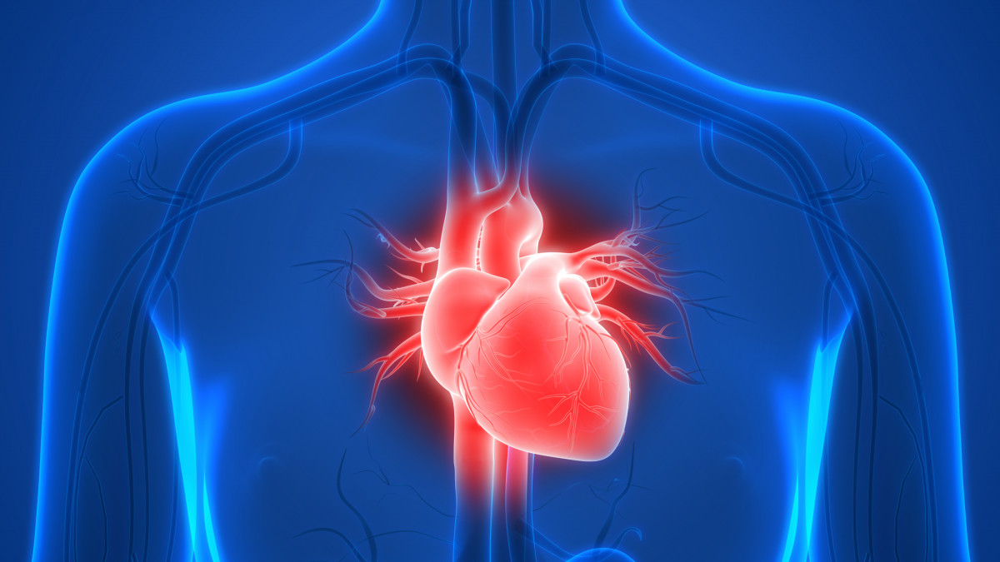

Le cœur est un organe vital qui joue un rôle crucial dans le système circulatoire. Voici ses principales fonctions :
1. Pompage du sang : Le cœur pompe le sang oxygéné des poumons vers le reste du corps et le sang désoxygéné du corps vers les poumons pour être réoxygéné.
2. Régulation du flux sanguin : Grâce à ses contractions rythmiques, le cœur assure un flux sanguin continu et régulier à travers les artères et les veines.
3. Distribution des nutriments et de l'oxygène : Le sang transporté par le cœur contient des nutriments et de l'oxygène essentiels pour les cellules et les tissus du corps.
4. Élimination des déchets : Le cœur aide à éliminer les déchets métaboliques, comme le dioxyde de carbone, en les transportant vers les organes d'excrétion.
La coronaropathie, également appelée maladie coronarienne, est une condition où les artères coronaires du cœur se rétrécissent ou se bouchent.
Cela peut réduire l'apport en sang, en oxygène et en nutriments au muscle cardiaque,La coronaropathie, également appelée maladie coronarienne,
est une condition où les artères coronaires du cœur se rétrécissent ou se bouchent.
Cela peut réduire l'apport en sang, en oxygène et en nutriments au muscle cardiaque, entraînant des douleurs thoraciques entraînant des douleurs thoraciques (angine de poitrine) ou même un infarctus du myocarde (crise cardiaque).